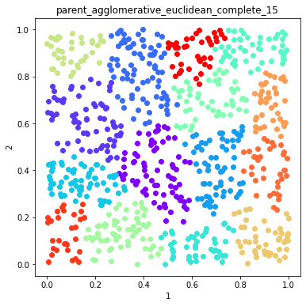
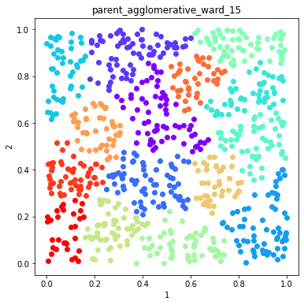
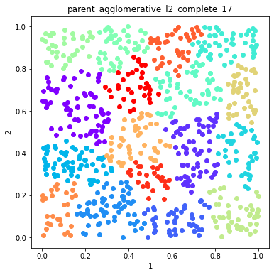

Build an ensemble using algorithms and distances, finish to see if it uncovers the lack of structure¶
In [1]:
import numpy as np
import pandas as pd
import openensembles as oe
import matplotlib.pyplot as plt
n_samples = 800
np.random.seed(0) #this helps to establish the same dataset and functionality, but is not required
no_structure = np.random.rand(n_samples, 2), None
X,y = no_structure
df = pd.DataFrame(X)
d = oe.data(df, [1,2])
d.plot_data('parent')
Out[1]:
Create an ensemble¶
In [2]:
c = oe.cluster(d) #instantiate an object so we can get all available algorithms
a = c.algorithms_available()
paramsC = c.clustering_algorithm_parameters() #here we will rely on walking through
# remove DBSCAN -- this does very well on unstructured data, we want to ask if we can use poorly performing algorithms
# to identify if there isn't structure.
algorithmsToRemove = ['DBSCAN']
for algToRemove in algorithmsToRemove:
del a[algToRemove]
takesLinkages = paramsC['linkage']
takesDistances = paramsC['distance']
takesK = paramsC['K']
In [3]:
#setup the parameters of clustering here, algorithms are set by algorithms_available
K = range(3, 20, 2)
linkages = ['average', 'complete', 'ward']
distances = ['euclidean', 'l1', 'l2']
In [4]:
# Create an ensemble: sweep K, distance metrics
c = oe.cluster(d)
for data_source in d.D.keys(): #if there were transformations in d.D
for algorithm in list(a.keys()): #linkage is only for agglomerative, which also accepts K and distances, so handle that here
if algorithm in takesK:
for k in K:
if algorithm in takesDistances:
if algorithm in takesLinkages:
for linkage in linkages:
if linkage == 'ward':
out_name = '_'.join([data_source, algorithm, linkage, str(k)])
c.cluster(data_source, algorithm, out_name, K=k, Require_Unique= True, linkage=linkage)
else:
for dist in distances:
out_name = '_'.join([data_source, algorithm, dist, linkage, str(k)])
c.cluster(data_source, algorithm, out_name, K=k, Require_Unique= True, linkage=linkage, distance=dist)
else:
for dist in distances:
out_name = '_'.join([data_source, algorithm, dist, str(k)])
c.cluster(data_source, algorithm, out_name, K=k, Require_Unique= True, distance=dist)
else:
out_name = '_'.join([data_source, algorithm, str(k)])
c.cluster(data_source, algorithm, out_name, K=k, Require_Unique= True)
else: # does not take K
if algorithm in takesDistances:
for dist in distances:
out_name = '_'.join([data_source, algorithm, dist])
c.cluster(data_source, algorithm, out_name, Require_Unique= True, distance=dist)
else:
out_name = '_'.join([data_source, algorithm])
c.cluster(data_source, algorithm, out_name, Require_Unique= True)
Plot example solutions from the ensemble¶
In [5]:
#plot some random number of solutions
names = c.labels.keys()
figs =[]
fig = 0
numSolutions = 6
#namesToSelect = random.sample(names, numSolutions)
namesToSelect = np.random.choice(list(names), numSolutions, replace=False)
for name in namesToSelect:
d.plot_data('parent', fig_num=fig, class_labels=c.labels[name], title=name)
plt.show()
fig+=1






Finish the ensemble using Majority Vote and Graph Closure¶
In [6]:
#View the ensembles
coMat = c.co_occurrence_matrix()
In [7]:
fig = coMat.plot(add_labels=False)
plt.show()

Graph Closure and Majority Vote Finishing¶
In [8]:
# Explore effects of threshold on graph closure
thresholds = [0.5, 0.6, 0.7]
fig = 0
c_graph_dict = {}
c_majority_vote_dict = {}
for threshold in thresholds:
c_graph = c.finish_graph_closure(threshold=threshold)
c_graph_dict[str(threshold)] = c_graph
c_majority_vote = c.finish_majority_vote(threshold=threshold)
c_majority_vote_dict[str(threshold)] = c_majority_vote
In [9]:
# Plot the solutions of Graph Closure
fig = 0
for threshold in c_graph_dict:
labels = c_graph_dict[threshold].labels['graph_closure']
d.plot_data('parent', fig_num = fig, class_labels=labels, title='Graph Closure threshold=%s'%(threshold))
plt.show()
fig+=1


In [10]:
# Plot the solutions of Majority Vote
fig = 0
figs =[]
for threshold in c_majority_vote_dict:
labels = c_majority_vote_dict[threshold].labels['majority_vote']
d.plot_data('parent', fig_num = fig, class_labels=labels, title='Majority Vote threshold=%s'%(threshold))
plt.show()
fig+=1


Use mutual information to compare solutions¶
In [11]:
mi_adjusted = c.MI(MI_type='adjusted')
In [12]:
mi_adjusted.matrix
Out[12]:
| parent_AffinityPropagation_euclidean | parent_AffinityPropagation_l1 | parent_AffinityPropagation_l2 | parent_Birch_3 | parent_Birch_5 | parent_Birch_7 | parent_Birch_9 | parent_Birch_11 | parent_Birch_13 | parent_Birch_15 | ... | parent_spectral_l2_13 | parent_spectral_euclidean_15 | parent_spectral_l1_15 | parent_spectral_l2_15 | parent_spectral_euclidean_17 | parent_spectral_l1_17 | parent_spectral_l2_17 | parent_spectral_euclidean_19 | parent_spectral_l1_19 | parent_spectral_l2_19 | |
|---|---|---|---|---|---|---|---|---|---|---|---|---|---|---|---|---|---|---|---|---|---|
| parent_AffinityPropagation_euclidean | 1 | 0.969461 | 1 | 0.47185 | 0.550541 | 0.515455 | 0.461976 | 0.426 | 0.413298 | 0.389352 | ... | 0.435873 | 0.414618 | 0.390257 | 0.415368 | 0.385858 | 0.396539 | 0.388509 | 0.363028 | 0.373439 | 0.365509 |
| parent_AffinityPropagation_l1 | 0.969461 | 1 | 0.969461 | 0.471528 | 0.551682 | 0.514644 | 0.460579 | 0.42472 | 0.412512 | 0.38861 | ... | 0.435468 | 0.420074 | 0.388147 | 0.420788 | 0.386825 | 0.39792 | 0.38942 | 0.363668 | 0.37529 | 0.365794 |
| parent_AffinityPropagation_l2 | 1 | 0.969461 | 1 | 0.47185 | 0.550541 | 0.515455 | 0.461976 | 0.426 | 0.413298 | 0.389352 | ... | 0.435873 | 0.414618 | 0.390257 | 0.415368 | 0.385858 | 0.396539 | 0.388509 | 0.363028 | 0.373439 | 0.365509 |
| parent_Birch_3 | 0.47185 | 0.471528 | 0.47185 | 1 | 0.663886 | 0.550815 | 0.484374 | 0.442792 | 0.412642 | 0.388473 | ... | 0.316598 | 0.315282 | 0.315271 | 0.315378 | 0.305555 | 0.292182 | 0.301978 | 0.283765 | 0.285804 | 0.296302 |
| parent_Birch_5 | 0.550541 | 0.551682 | 0.550541 | 0.663886 | 1 | 0.829675 | 0.729517 | 0.666798 | 0.621283 | 0.584759 | ... | 0.460372 | 0.462782 | 0.460737 | 0.460849 | 0.449125 | 0.422942 | 0.445373 | 0.423259 | 0.41632 | 0.428678 |
| parent_Birch_7 | 0.515455 | 0.514644 | 0.515455 | 0.550815 | 0.829675 | 1 | 0.879187 | 0.803491 | 0.748506 | 0.70433 | ... | 0.552846 | 0.560904 | 0.547815 | 0.558991 | 0.539924 | 0.514103 | 0.536182 | 0.507555 | 0.494372 | 0.523523 |
| parent_Birch_9 | 0.461976 | 0.460579 | 0.461976 | 0.484374 | 0.729517 | 0.879187 | 1 | 0.913878 | 0.851275 | 0.800923 | ... | 0.622663 | 0.630586 | 0.618948 | 0.628647 | 0.597772 | 0.589919 | 0.59426 | 0.56635 | 0.552682 | 0.581835 |
| parent_Birch_11 | 0.426 | 0.42472 | 0.426 | 0.442792 | 0.666798 | 0.803491 | 0.913878 | 1 | 0.931447 | 0.876249 | ... | 0.670469 | 0.664053 | 0.659505 | 0.662095 | 0.628322 | 0.646462 | 0.624923 | 0.620017 | 0.594294 | 0.623674 |
| parent_Birch_13 | 0.413298 | 0.412512 | 0.413298 | 0.412642 | 0.621283 | 0.748506 | 0.851275 | 0.931447 | 1 | 0.940677 | ... | 0.721066 | 0.696608 | 0.710368 | 0.694629 | 0.661231 | 0.686351 | 0.657149 | 0.646025 | 0.633005 | 0.64669 |
| parent_Birch_15 | 0.389352 | 0.38861 | 0.389352 | 0.388473 | 0.584759 | 0.70433 | 0.800923 | 0.876249 | 0.940677 | 1 | ... | 0.723527 | 0.737951 | 0.760141 | 0.736082 | 0.707519 | 0.727009 | 0.703423 | 0.689421 | 0.681628 | 0.682925 |
| parent_Birch_17 | 0.384262 | 0.384809 | 0.384262 | 0.371696 | 0.559383 | 0.673601 | 0.765888 | 0.837841 | 0.89941 | 0.956163 | ... | 0.701424 | 0.715313 | 0.741844 | 0.714695 | 0.717888 | 0.743659 | 0.71376 | 0.708991 | 0.696404 | 0.693339 |
| parent_Birch_19 | 0.375528 | 0.376623 | 0.375528 | 0.359189 | 0.540438 | 0.650623 | 0.739672 | 0.809097 | 0.868534 | 0.923386 | ... | 0.693274 | 0.712199 | 0.733563 | 0.711596 | 0.720586 | 0.738412 | 0.717238 | 0.724051 | 0.724144 | 0.723293 |
| parent_GaussianMixture_3 | 0.491595 | 0.499757 | 0.491595 | 0.376803 | 0.427384 | 0.409299 | 0.36674 | 0.352211 | 0.338986 | 0.318962 | ... | 0.338588 | 0.335342 | 0.319242 | 0.335484 | 0.326423 | 0.299767 | 0.328127 | 0.311226 | 0.312871 | 0.308678 |
| parent_GaussianMixture_5 | 0.625357 | 0.632403 | 0.625357 | 0.409874 | 0.580182 | 0.528853 | 0.503244 | 0.46033 | 0.461255 | 0.445039 | ... | 0.470461 | 0.450929 | 0.458477 | 0.451644 | 0.44811 | 0.437881 | 0.442986 | 0.414601 | 0.446266 | 0.416592 |
| parent_GaussianMixture_7 | 0.464368 | 0.464958 | 0.464368 | 0.356254 | 0.519618 | 0.649037 | 0.639994 | 0.604625 | 0.581099 | 0.550556 | ... | 0.553389 | 0.557106 | 0.539279 | 0.556639 | 0.561709 | 0.520792 | 0.560374 | 0.528144 | 0.528483 | 0.540561 |
| parent_GaussianMixture_9 | 0.379559 | 0.379532 | 0.379559 | 0.357252 | 0.494436 | 0.594575 | 0.61581 | 0.591439 | 0.584176 | 0.571439 | ... | 0.565084 | 0.566758 | 0.598223 | 0.56637 | 0.570017 | 0.572604 | 0.567997 | 0.552163 | 0.542871 | 0.565181 |
| parent_GaussianMixture_11 | 0.373241 | 0.370956 | 0.373241 | 0.310686 | 0.473861 | 0.568562 | 0.643831 | 0.66791 | 0.641404 | 0.625874 | ... | 0.646543 | 0.641193 | 0.663627 | 0.639277 | 0.638928 | 0.62816 | 0.636104 | 0.605981 | 0.606077 | 0.601932 |
| parent_GaussianMixture_13 | 0.399287 | 0.399824 | 0.399287 | 0.318035 | 0.466653 | 0.554099 | 0.626396 | 0.660843 | 0.674713 | 0.663794 | ... | 0.709852 | 0.703604 | 0.692881 | 0.706984 | 0.696317 | 0.656026 | 0.695963 | 0.679099 | 0.664882 | 0.675276 |
| parent_GaussianMixture_15 | 0.398547 | 0.398714 | 0.398547 | 0.307431 | 0.444546 | 0.536538 | 0.606048 | 0.651592 | 0.685968 | 0.710123 | ... | 0.748829 | 0.778362 | 0.735559 | 0.774902 | 0.744204 | 0.730885 | 0.740447 | 0.693122 | 0.671811 | 0.684968 |
| parent_GaussianMixture_17 | 0.364989 | 0.364704 | 0.364989 | 0.288004 | 0.430594 | 0.526012 | 0.589397 | 0.629549 | 0.657248 | 0.6961 | ... | 0.721545 | 0.73644 | 0.733151 | 0.739853 | 0.78721 | 0.736502 | 0.786564 | 0.772925 | 0.739776 | 0.731283 |
| parent_GaussianMixture_19 | 0.346846 | 0.347013 | 0.346846 | 0.293521 | 0.414892 | 0.497263 | 0.551663 | 0.590396 | 0.624579 | 0.659462 | ... | 0.649745 | 0.655257 | 0.701795 | 0.654675 | 0.729222 | 0.706584 | 0.728252 | 0.726658 | 0.705793 | 0.73214 |
| parent_MeanShift | -6.59181e-16 | -5.58949e-16 | -6.59181e-16 | -8.59172e-16 | -5.15298e-16 | 5.81832e-17 | 1.02507e-16 | -5.06908e-17 | -2.15151e-16 | -1.71929e-16 | ... | -1.0896e-16 | -6.92843e-17 | -7.75696e-17 | -6.92731e-17 | -6.0719e-17 | 2.43932e-17 | -4.59056e-17 | -4.74278e-18 | -7.7665e-17 | -1.91793e-16 |
| parent_agglomerative_euclidean_average_3 | 0.484124 | 0.482645 | 0.484124 | 0.341926 | 0.363089 | 0.38382 | 0.353056 | 0.322453 | 0.331442 | 0.31184 | ... | 0.330045 | 0.292672 | 0.30903 | 0.292624 | 0.287761 | 0.303011 | 0.28889 | 0.285827 | 0.283431 | 0.277953 |
| parent_agglomerative_l1_average_3 | 0.497627 | 0.507491 | 0.497627 | 0.314346 | 0.364984 | 0.376568 | 0.347591 | 0.317445 | 0.3372 | 0.317274 | ... | 0.329333 | 0.298182 | 0.309831 | 0.298133 | 0.291934 | 0.297212 | 0.291948 | 0.278671 | 0.283653 | 0.275488 |
| parent_agglomerative_l2_average_3 | 0.484124 | 0.482645 | 0.484124 | 0.341926 | 0.363089 | 0.38382 | 0.353056 | 0.322453 | 0.331442 | 0.31184 | ... | 0.330045 | 0.292672 | 0.30903 | 0.292624 | 0.287761 | 0.303011 | 0.28889 | 0.285827 | 0.283431 | 0.277953 |
| parent_agglomerative_euclidean_complete_3 | 0.496248 | 0.498918 | 0.496248 | 0.391211 | 0.447078 | 0.390698 | 0.358241 | 0.327205 | 0.341885 | 0.321696 | ... | 0.317334 | 0.307444 | 0.314595 | 0.307642 | 0.3173 | 0.292784 | 0.316463 | 0.300647 | 0.311321 | 0.304386 |
| parent_agglomerative_l1_complete_3 | 0.473226 | 0.474033 | 0.473226 | 0.374806 | 0.359418 | 0.393353 | 0.346552 | 0.322487 | 0.307054 | 0.288821 | ... | 0.29383 | 0.28375 | 0.275929 | 0.284641 | 0.273021 | 0.276348 | 0.275044 | 0.286391 | 0.283634 | 0.28204 |
| parent_agglomerative_l2_complete_3 | 0.496248 | 0.498918 | 0.496248 | 0.391211 | 0.447078 | 0.390698 | 0.358241 | 0.327205 | 0.341885 | 0.321696 | ... | 0.317334 | 0.307444 | 0.314595 | 0.307642 | 0.3173 | 0.292784 | 0.316463 | 0.300647 | 0.311321 | 0.304386 |
| parent_agglomerative_ward_3 | 0.395781 | 0.390465 | 0.395781 | 0.397594 | 0.437303 | 0.426709 | 0.384411 | 0.35154 | 0.329568 | 0.324764 | ... | 0.306745 | 0.291573 | 0.299644 | 0.289534 | 0.310278 | 0.288305 | 0.307468 | 0.295109 | 0.275555 | 0.28247 |
| parent_agglomerative_euclidean_average_5 | 0.555307 | 0.555174 | 0.555307 | 0.408765 | 0.560105 | 0.547018 | 0.516742 | 0.500903 | 0.497583 | 0.468676 | ... | 0.453865 | 0.4268 | 0.458549 | 0.426772 | 0.421302 | 0.446142 | 0.419657 | 0.418274 | 0.418961 | 0.411544 |
| ... | ... | ... | ... | ... | ... | ... | ... | ... | ... | ... | ... | ... | ... | ... | ... | ... | ... | ... | ... | ... | ... |
| parent_kmeans_15 | 0.418025 | 0.419735 | 0.418025 | 0.326308 | 0.46769 | 0.574453 | 0.640097 | 0.67731 | 0.718999 | 0.752146 | ... | 0.778527 | 0.839448 | 0.764194 | 0.841979 | 0.764634 | 0.740969 | 0.767202 | 0.680437 | 0.701905 | 0.699909 |
| parent_kmeans_17 | 0.4147 | 0.41922 | 0.4147 | 0.306316 | 0.440751 | 0.534829 | 0.601402 | 0.644232 | 0.682215 | 0.711828 | ... | 0.740715 | 0.797526 | 0.717737 | 0.800142 | 0.783447 | 0.753964 | 0.784365 | 0.72275 | 0.708458 | 0.733076 |
| parent_kmeans_19 | 0.382241 | 0.383054 | 0.382241 | 0.300765 | 0.437271 | 0.529889 | 0.591024 | 0.626969 | 0.654736 | 0.690157 | ... | 0.706554 | 0.755458 | 0.722024 | 0.75826 | 0.828208 | 0.726479 | 0.830806 | 0.777178 | 0.75917 | 0.821596 |
| parent_spectral_euclidean_3 | 0.519826 | 0.530227 | 0.519826 | 0.4373 | 0.466959 | 0.457537 | 0.408181 | 0.381463 | 0.361443 | 0.342208 | ... | 0.360182 | 0.353962 | 0.323203 | 0.353975 | 0.320365 | 0.320417 | 0.319173 | 0.325855 | 0.291035 | 0.317642 |
| parent_spectral_l1_3 | 0.520333 | 0.53074 | 0.520333 | 0.437666 | 0.468319 | 0.458669 | 0.409179 | 0.381873 | 0.361826 | 0.34257 | ... | 0.359395 | 0.353159 | 0.322327 | 0.353173 | 0.31959 | 0.318968 | 0.318397 | 0.324437 | 0.291511 | 0.316205 |
| parent_spectral_l2_3 | 0.519826 | 0.530227 | 0.519826 | 0.4373 | 0.466959 | 0.457537 | 0.408181 | 0.381463 | 0.361443 | 0.342208 | ... | 0.360182 | 0.353962 | 0.323203 | 0.353975 | 0.320365 | 0.320417 | 0.319173 | 0.325855 | 0.291035 | 0.317642 |
| parent_spectral_euclidean_5 | 0.627664 | 0.636214 | 0.627664 | 0.394777 | 0.567896 | 0.5648 | 0.507323 | 0.46943 | 0.461334 | 0.438439 | ... | 0.50628 | 0.457121 | 0.465574 | 0.458043 | 0.448745 | 0.463751 | 0.454043 | 0.429169 | 0.437458 | 0.420863 |
| parent_spectral_l1_5 | 0.610574 | 0.61809 | 0.610574 | 0.404844 | 0.583855 | 0.575314 | 0.518721 | 0.47805 | 0.471063 | 0.446584 | ... | 0.513065 | 0.459136 | 0.473179 | 0.459952 | 0.444541 | 0.461689 | 0.450446 | 0.432566 | 0.44361 | 0.421603 |
| parent_spectral_l2_5 | 0.625604 | 0.63404 | 0.625604 | 0.396181 | 0.568511 | 0.565132 | 0.507616 | 0.469699 | 0.461586 | 0.438676 | ... | 0.505613 | 0.456993 | 0.466191 | 0.457873 | 0.448773 | 0.462876 | 0.454072 | 0.428915 | 0.438572 | 0.420763 |
| parent_spectral_euclidean_7 | 0.403297 | 0.400556 | 0.403297 | 0.312456 | 0.469974 | 0.589357 | 0.606791 | 0.57347 | 0.550647 | 0.549046 | ... | 0.551949 | 0.556804 | 0.536399 | 0.557025 | 0.536419 | 0.525111 | 0.53773 | 0.498079 | 0.525449 | 0.51092 |
| parent_spectral_l1_7 | 0.45155 | 0.457857 | 0.45155 | 0.368037 | 0.485989 | 0.591534 | 0.603329 | 0.588505 | 0.568584 | 0.546961 | ... | 0.564399 | 0.557542 | 0.53948 | 0.557671 | 0.518908 | 0.502261 | 0.521743 | 0.492522 | 0.511539 | 0.508959 |
| parent_spectral_l2_7 | 0.4078 | 0.405078 | 0.4078 | 0.314818 | 0.464454 | 0.582466 | 0.600077 | 0.567309 | 0.545508 | 0.544191 | ... | 0.552708 | 0.559082 | 0.537231 | 0.559303 | 0.538618 | 0.525188 | 0.539974 | 0.502417 | 0.525549 | 0.515253 |
| parent_spectral_euclidean_9 | 0.415411 | 0.418631 | 0.415411 | 0.350733 | 0.519749 | 0.595488 | 0.671264 | 0.642453 | 0.611383 | 0.600179 | ... | 0.611176 | 0.597888 | 0.597529 | 0.59817 | 0.584416 | 0.574476 | 0.583007 | 0.568593 | 0.571808 | 0.559767 |
| parent_spectral_l1_9 | 0.424035 | 0.426794 | 0.424035 | 0.339465 | 0.503009 | 0.587693 | 0.675815 | 0.642036 | 0.619733 | 0.609617 | ... | 0.64783 | 0.628374 | 0.586749 | 0.627013 | 0.57221 | 0.586623 | 0.573891 | 0.556572 | 0.546617 | 0.560743 |
| parent_spectral_l2_9 | 0.416085 | 0.417115 | 0.416085 | 0.349521 | 0.518561 | 0.594817 | 0.670603 | 0.641736 | 0.610711 | 0.599544 | ... | 0.610332 | 0.597038 | 0.598039 | 0.59732 | 0.584468 | 0.572925 | 0.583059 | 0.568546 | 0.571567 | 0.559699 |
| parent_spectral_euclidean_11 | 0.426311 | 0.430548 | 0.426311 | 0.347833 | 0.495037 | 0.610978 | 0.678481 | 0.716362 | 0.697921 | 0.68672 | ... | 0.750297 | 0.721631 | 0.68768 | 0.724563 | 0.65613 | 0.645092 | 0.654237 | 0.635847 | 0.616443 | 0.640551 |
| parent_spectral_l1_11 | 0.406278 | 0.405887 | 0.406278 | 0.351067 | 0.492709 | 0.593273 | 0.669266 | 0.700479 | 0.679691 | 0.676794 | ... | 0.660162 | 0.655272 | 0.646476 | 0.654947 | 0.670392 | 0.618723 | 0.669174 | 0.637554 | 0.619275 | 0.641215 |
| parent_spectral_l2_11 | 0.427764 | 0.424271 | 0.427764 | 0.341706 | 0.492396 | 0.587038 | 0.656161 | 0.691805 | 0.681986 | 0.671635 | ... | 0.736597 | 0.711089 | 0.689592 | 0.714441 | 0.663382 | 0.642409 | 0.661414 | 0.621595 | 0.615013 | 0.6265 |
| parent_spectral_euclidean_13 | 0.433302 | 0.432977 | 0.433302 | 0.317581 | 0.462278 | 0.557081 | 0.629159 | 0.681285 | 0.731814 | 0.733464 | ... | 0.961493 | 0.773755 | 0.79658 | 0.776396 | 0.720039 | 0.751187 | 0.726745 | 0.700836 | 0.673473 | 0.669745 |
| parent_spectral_l1_13 | 0.39967 | 0.398636 | 0.39967 | 0.323434 | 0.4928 | 0.579213 | 0.646464 | 0.699808 | 0.732805 | 0.72547 | ... | 0.733991 | 0.711796 | 0.713211 | 0.709194 | 0.71171 | 0.674692 | 0.710954 | 0.700202 | 0.673986 | 0.660686 |
| parent_spectral_l2_13 | 0.435873 | 0.435468 | 0.435873 | 0.316598 | 0.460372 | 0.552846 | 0.622663 | 0.670469 | 0.721066 | 0.723527 | ... | 1 | 0.773236 | 0.807224 | 0.775877 | 0.724981 | 0.754707 | 0.731369 | 0.701548 | 0.673217 | 0.67261 |
| parent_spectral_euclidean_15 | 0.414618 | 0.420074 | 0.414618 | 0.315282 | 0.462782 | 0.560904 | 0.630586 | 0.664053 | 0.696608 | 0.737951 | ... | 0.773236 | 1 | 0.772125 | 0.995535 | 0.827192 | 0.749297 | 0.826437 | 0.701904 | 0.705166 | 0.747121 |
| parent_spectral_l1_15 | 0.390257 | 0.388147 | 0.390257 | 0.315271 | 0.460737 | 0.547815 | 0.618948 | 0.659505 | 0.710368 | 0.760141 | ... | 0.807224 | 0.772125 | 1 | 0.770232 | 0.772969 | 0.809908 | 0.768177 | 0.706049 | 0.736309 | 0.702273 |
| parent_spectral_l2_15 | 0.415368 | 0.420788 | 0.415368 | 0.315378 | 0.460849 | 0.558991 | 0.628647 | 0.662095 | 0.694629 | 0.736082 | ... | 0.775877 | 0.995535 | 0.770232 | 1 | 0.824794 | 0.749841 | 0.824037 | 0.702628 | 0.705074 | 0.746187 |
| parent_spectral_euclidean_17 | 0.385858 | 0.386825 | 0.385858 | 0.305555 | 0.449125 | 0.539924 | 0.597772 | 0.628322 | 0.661231 | 0.707519 | ... | 0.724981 | 0.827192 | 0.772969 | 0.824794 | 1 | 0.761901 | 0.987949 | 0.794851 | 0.787314 | 0.828907 |
| parent_spectral_l1_17 | 0.396539 | 0.39792 | 0.396539 | 0.292182 | 0.422942 | 0.514103 | 0.589919 | 0.646462 | 0.686351 | 0.727009 | ... | 0.754707 | 0.749297 | 0.809908 | 0.749841 | 0.761901 | 1 | 0.761437 | 0.768048 | 0.726761 | 0.742357 |
| parent_spectral_l2_17 | 0.388509 | 0.38942 | 0.388509 | 0.301978 | 0.445373 | 0.536182 | 0.59426 | 0.624923 | 0.657149 | 0.703423 | ... | 0.731369 | 0.826437 | 0.768177 | 0.824037 | 0.987949 | 0.761437 | 1 | 0.794387 | 0.785477 | 0.828684 |
| parent_spectral_euclidean_19 | 0.363028 | 0.363668 | 0.363028 | 0.283765 | 0.423259 | 0.507555 | 0.56635 | 0.620017 | 0.646025 | 0.689421 | ... | 0.701548 | 0.701904 | 0.706049 | 0.702628 | 0.794851 | 0.768048 | 0.794387 | 1 | 0.774385 | 0.840652 |
| parent_spectral_l1_19 | 0.373439 | 0.37529 | 0.373439 | 0.285804 | 0.41632 | 0.494372 | 0.552682 | 0.594294 | 0.633005 | 0.681628 | ... | 0.673217 | 0.705166 | 0.736309 | 0.705074 | 0.787314 | 0.726761 | 0.785477 | 0.774385 | 1 | 0.756606 |
| parent_spectral_l2_19 | 0.365509 | 0.365794 | 0.365509 | 0.296302 | 0.428678 | 0.523523 | 0.581835 | 0.623674 | 0.64669 | 0.682925 | ... | 0.67261 | 0.747121 | 0.702273 | 0.746187 | 0.828907 | 0.742357 | 0.828684 | 0.840652 | 0.756606 | 1 |
121 rows × 121 columns
In [13]:
mi_adjusted.plot()
Out[13]:

In [14]:
#plot MI with type of algorithm as label
label_vec = []
for index, row in mi_adjusted.matrix.iterrows():
name = c.algorithms[index]
label_vec.append(name)
In [15]:
mi_adjusted.plot(threshold= 0, label_vec=label_vec)
Out[15]:

In [ ]: